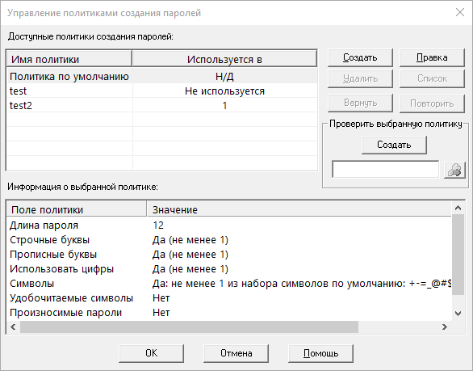
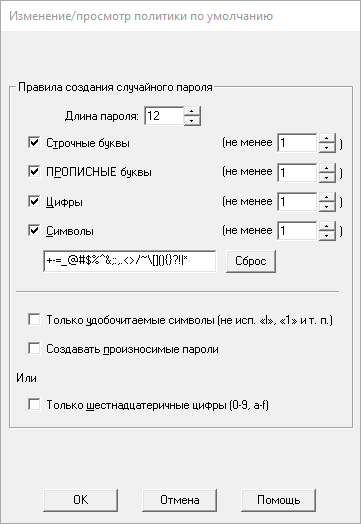
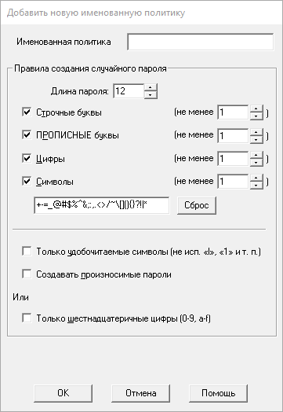
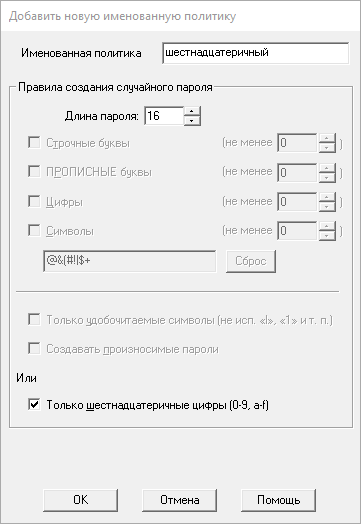

Начиная с версии 3.28, PasswordSafe позволяет работать с именованными политиками. Создание и управление политиками производится через меню «Сервис→Политики создания паролей...» Политики привязаны к контейнеру и хранятся в заголовке контейнера. Данный пункт меню также заменяет настройки политики по умолчанию, которые раньше задавались через «Сервис→Настройки».
Здесь вы можете редактировать политику по умолчания для текущего контейнера, а также создавать, редактировать и удалять «именованные» политики. Политика, которая используется хотя бы одним элементом не может быть удалена. После выбора политики её параметры отображаются внизу. Для получения списка элементов, использующих данную политику нажмите кнопку «Список» (для возврата к списку параметров нажмите кнопку «Информация»). Чтобы отредактировать/просмотреть ссылающийся элемент, щёлкните по нему дважды.
Чтобы отредактировать параметры политики по умолчанию, выберите ёё в списке и нажмите кнопку «Правка». Будет отображён следующий диалог:
Для добавления новой именованной политики нажмите кнопку «Создать». Будет отображён показанный ниже диалог. Начальные значения параметров берутся из политики по умолчанию для текущего контейнера. К параметрам применяются те же правила согласования, что и для политики по умолчанию. Кроме того вам нужно задать имя политики (оно должно быть уникально в текущем контейнере). Примечание. Имя политики должно быть не больше 255 символов.
Для редактирования параметров выберите требуемую именованную политику и нажмите кнопку «Правка». Будет отображён показанный ниже диалог. Имя существующей политики не может быть изменено.
При редактировании элемента и создании пароля через пункт меню «Сервис→Создать пароль» можно использовать именованные политики создании пароля. Именованные политики, не связанные с элементами, могут быть использованы для создания случайных паролей.
Вы можете выбрать политику по умолчанию или любую другую именованную политику, а затем нажать кнопку «Создать». Полученный пароль можно скопировать в буфер обмена.
Если контейнер открыт в режиме «только чтение», добавление, удаление и редактирование политик создания паролей невозможно. Просмотр параметров существующих политик доступен в любом режиме. Любые изменения, произведённые во время просмотра, не будут сохранены.
Для отмены/повтора изменений в политиках создания паролей вы можете использовать кнопки «Вернуть» и «Повторить» соответственно (или комбинации клавиш Ctrl+Z и Ctrl+Y [или их эквиваленты, определённые на вкладке «Сервис→Настройки→Комбинации клавиш»]). Если какое-либо действие было отменено, вы можете вернуть его, нажав кнопку «Повторить» (если после него не было совершено других действий). Изменения сохраняются в контейнер только после нажатия кнопки «OK».
При экспорте контейнера в XML (всех записей или их подмножества) также экспортируются все именованные политики, хранящиеся в данном контейнере. При импорте из XML-файла все именованные политики также импортируются в текущий контейнер. При этом, если в контейнере уже присутствует политика с таким же именем, и её настройки совпадают с импортируемыми, существующая одноимённая политика будет назначена соответствующим импортированным элементам. В случае, если именованная политика с совпадающим именем имеет другие параметры, к имени импортированной политики добавляется фраза «Импортировано дата/время» (где «дата/время» — дата и время импорта). Все соответствующие импортированные элементы будут привязаны к ней.
Все импортируемые записи, ссылающиеся на политику, отсутствующую в текущем контейнере или импортируемом XML-файле, будут привязаны к политике по умолчанию из текущего контейнера. Список затронутых элементов будет помещён в отчёт об импорте.
Имена связанных политик также экспортируются в простой текстовый файл. Но в настоящее время нет возможности сохранить в текст параметры именованных политик.
Поэтому, при импорте из текстового файла элементы, ссылающиеся на политики, отсутствующие в текущем контейнере, будут привязаны к политике по умолчанию. Список затронутых элементов будет помещён в отчёт об импорте.
При слиянии двух контейнеров (целиком или частично) связанные с добавляемыми элементами именованные политики будут взяты из контейнера-источника. При этом, если в контейнере уже присутствует политика с таким же именем, и её настройки совпадают с импортируемыми, существующая одноимённая политика будет назначена соответствующим элементам. В случае, если именованная политика с совпадающим именем имеет другие параметры, к имени импортированной политики добавляется фраза «Объединено дата/время» (где «дата/время» — дата и время слияния). Все соответствующие элементы будут привязаны к ней.
Аналогично, при перетаскивании одного или нескольких элементов из одного контейнера в другой, для обеспечения уникальности будет использоваться фраза «Перетянуто дата/время».